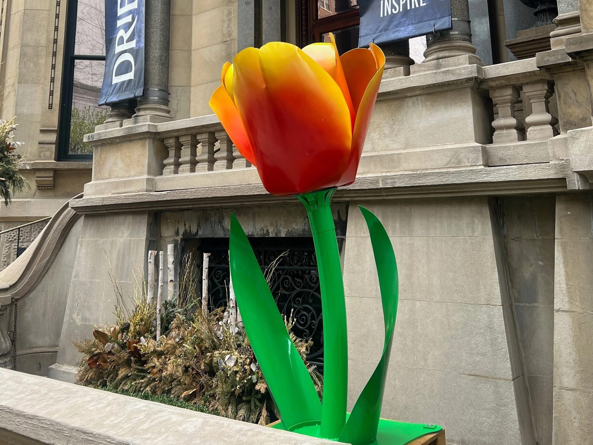
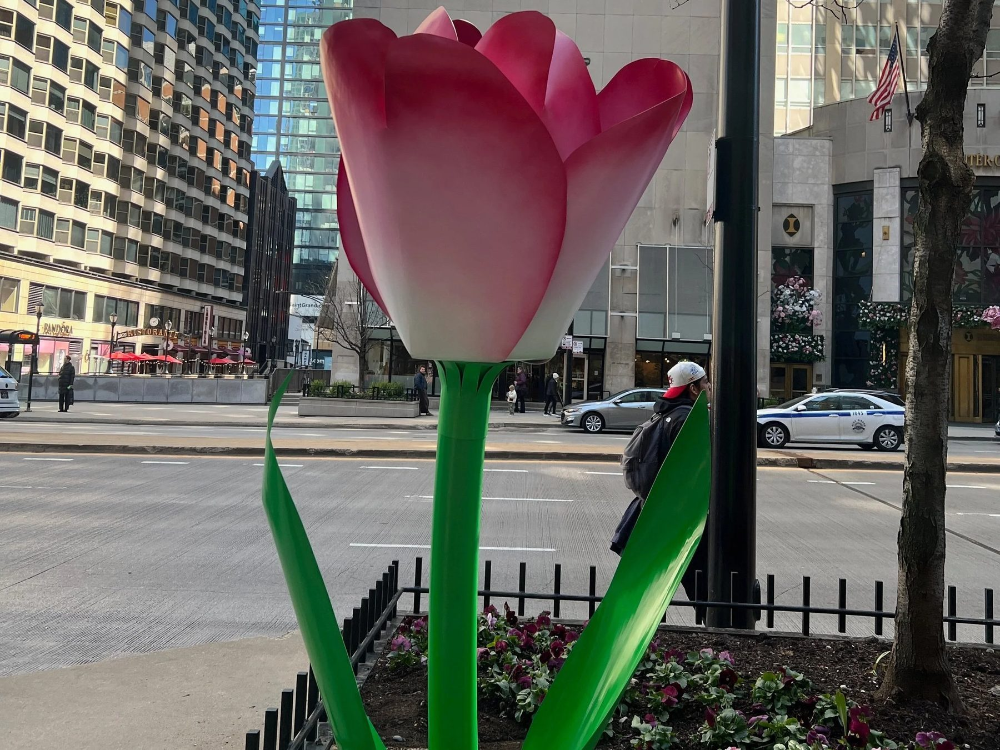
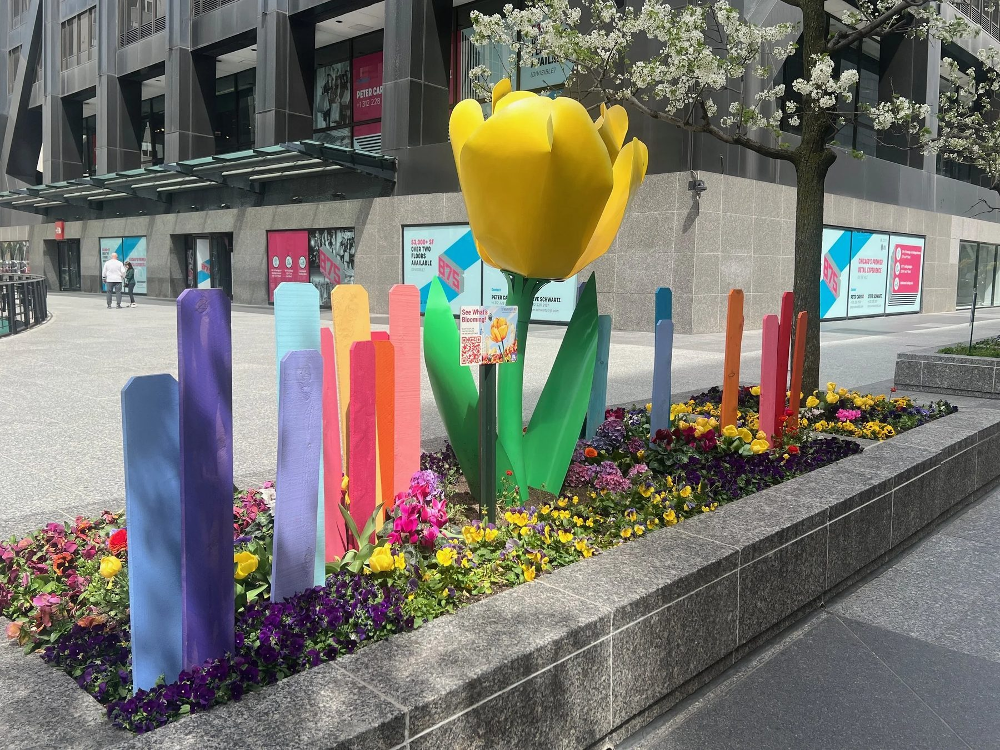
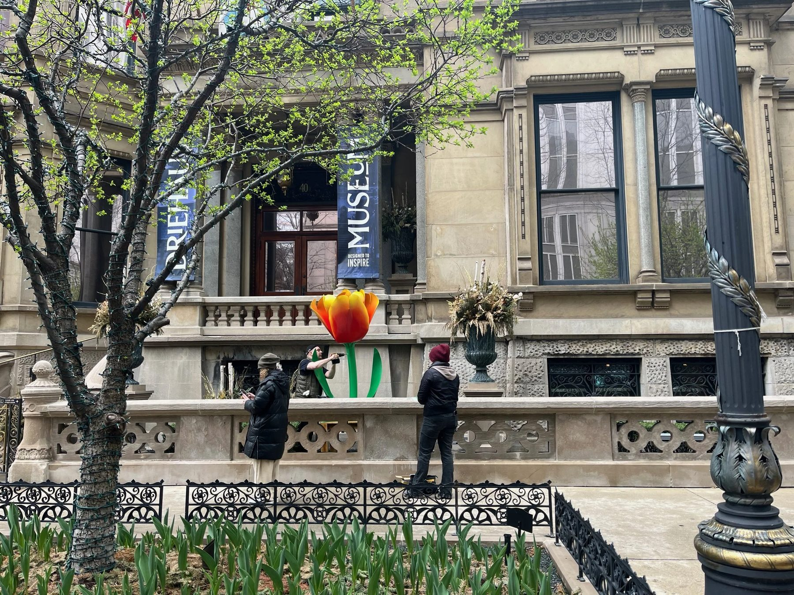
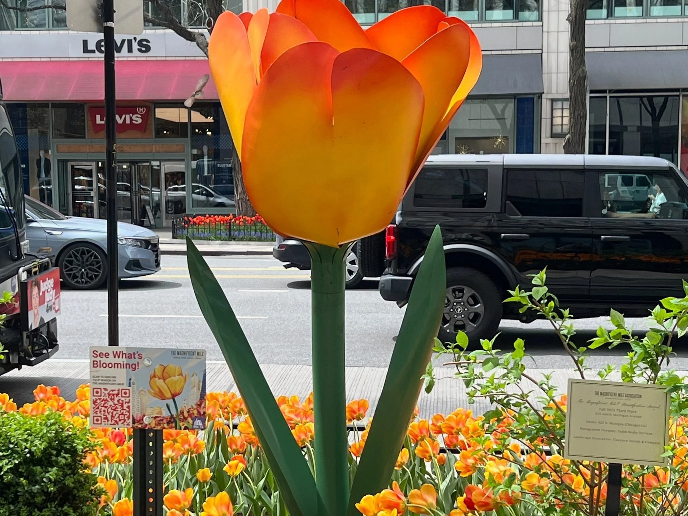
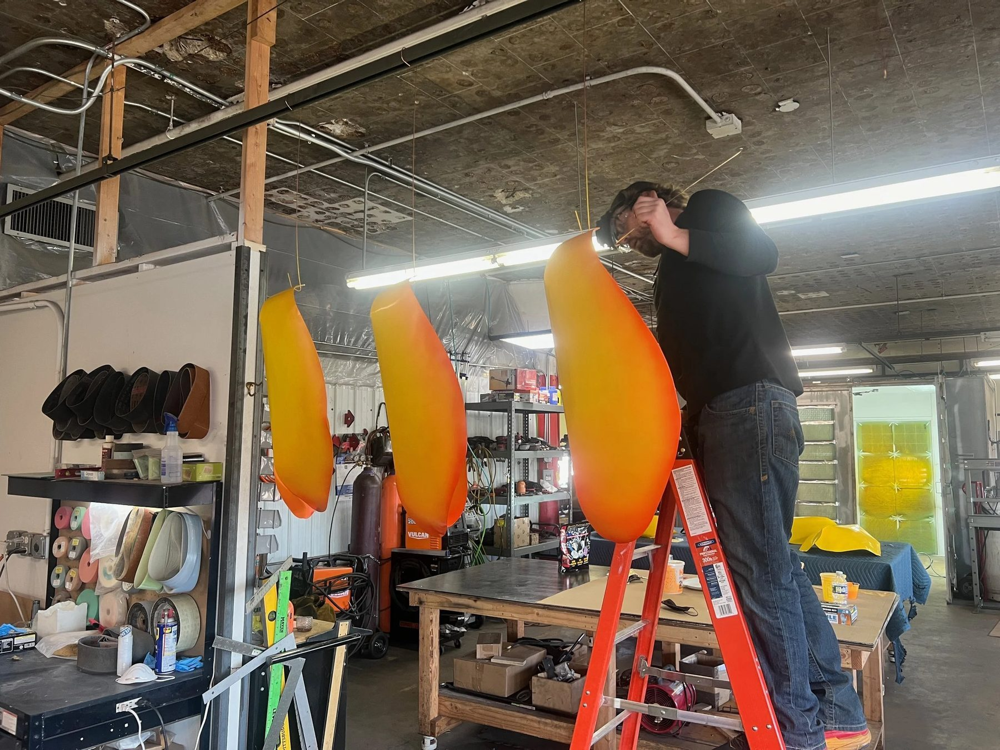
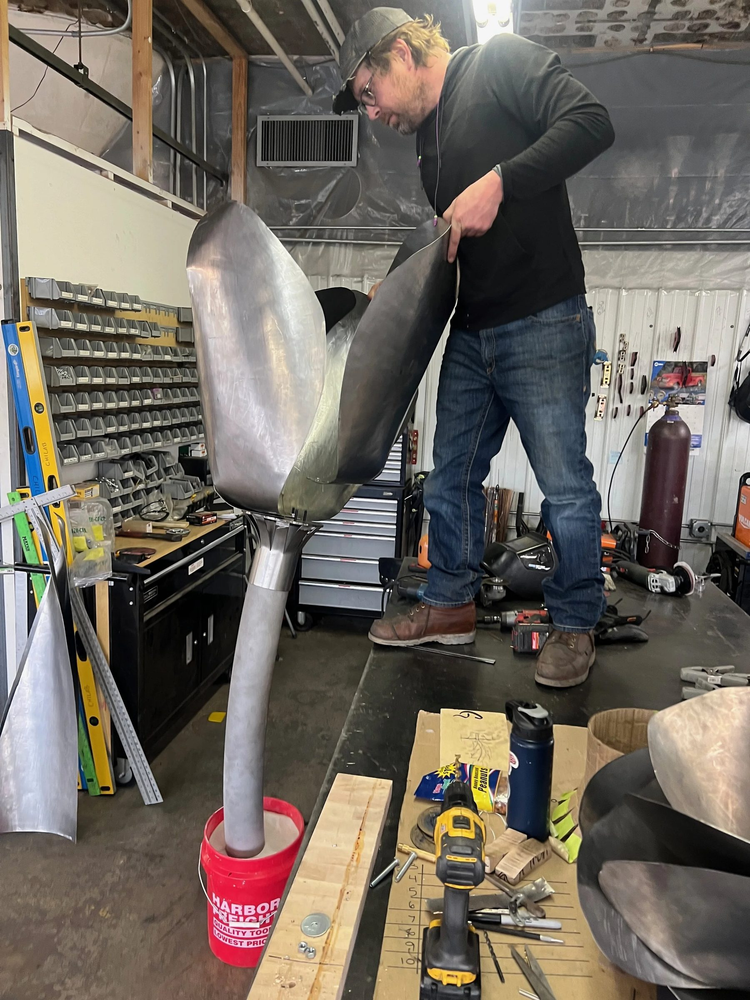
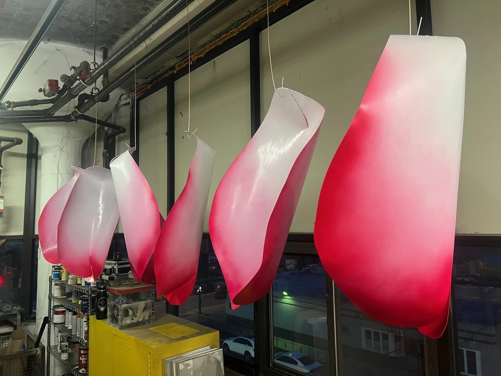
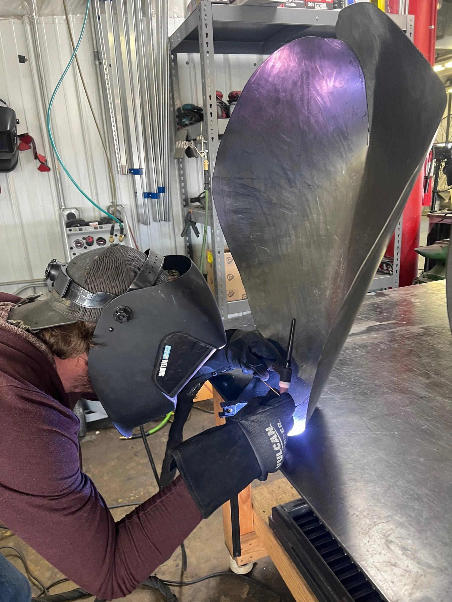

Public Art / 2025 / Chicago, IL
Tulips on The Magnificent Mile
The Magnificent Mile Association

Five oversized tulip sculptures placed along Michigan Avenue for the city's annual spring bloom.
The work
The Apeldoorn tulip was bred in Holland specifically for Chicago's Magnificent Mile, and the Consulate General of the Netherlands took part in baptizing it. For years it could only be found on the Mile. Five oversized tulip sculptures, developed with artist Aiden Kelley, The Magnificent Mile Association, and CNL Projects, put Chicago's signature spring bloom into public sculpture.
The material question
A scaled up flower only works if it reads as the flower. Each tulip had to feel organic and pronounced, like a perfectly scaled up version of the real thing, and its color had to belong to its sponsor: the Apeldoorn's own red and yellow at 625 N. Michigan, and for the Driehaus Museum the exact reverse, yellow tips over red petals.
The making
We dissected tulips to study their build, then fabricated the petals and finished them in automotive paint. Colors were chosen by each sponsoring business on the Mile, and as sponsors have picked new tulip varieties in recent years, the flowerbeds around the sculptures have been planted to match.
In place
A Chicago spring is wet and windy and tests everything left out in it. Every couple of years we collect the petals and repaint them, sometimes just covering dirt, sometimes wear and scratches, so the tulips come back fresh and new looking each season.
Details
- Year
2025 - Location
Chicago, IL - Category
Public Art - Materials
Fabricated metal, automotive finish
Credits
- The Magnificent Mile Association
- CNL Projects
- Artist: Aiden Kelley
Studio
- ChiLab Studio
- Chicago, Illinois
- Established 2013








Bring us a drawing,
a model, or a hunch.
The studio
Specialty material projects for architecture, interior design, public art, and the fine arts.
ChiLab Studio, Chicago, Illinois. Established 2013.
What we do
- Metal casting
- Glass
- Finishes
- Digital fabrication
- Metal fabrication
- Restoration
- Project management
Contact
info@chilabstudio.com
chilabstudio.com
Instagram @chilabstudio